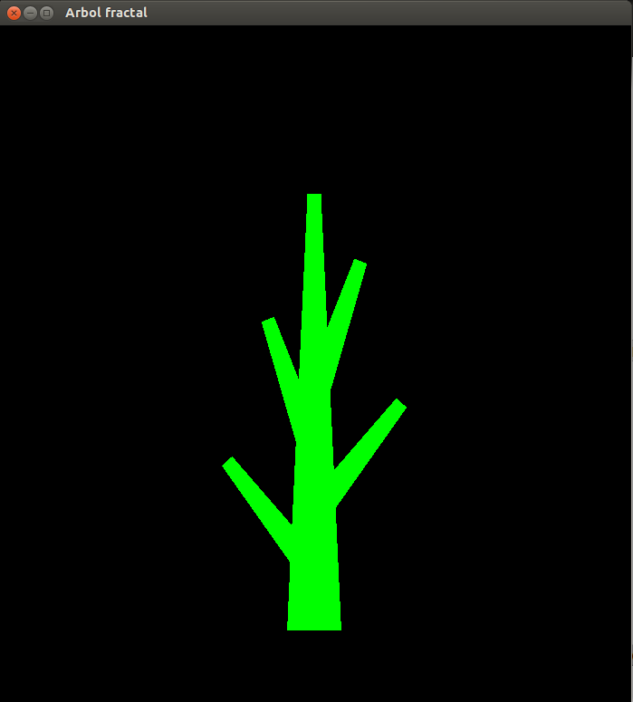

Tema 26: Programación de fractales en Haskell
Índice
1. Introducción
- Un fractal es un objeto geométrico cuya estructura básica, fragmentada o irregular, se repite a diferentes escalas.
- El término fue propuesto por el matemático Benoît Mandelbrot en 1975 y deriva del Latín fractus, que significa quebrado o fracturado.
- Muchas estructuras naturales son de tipo fractal. Por ejemplo, el romanescu
(un híbrido de brécol)

2. Ejemplo simple: el fractal del árbol
- El fractal árbol es
2.1. Tronco de un árbol
- Dibujo
Programa Tronco.hs
import Graphics.Gloss main :: IO () main = display (InWindow "Tronco de arbol" (700,800) (20,20)) black dibujo dibujo :: Picture dibujo = Color aquamarine (Translate 0 (-300) tronco) tronco :: Picture tronco = Polygon [(30,0), (15,300), (-15,300), (-30,0)]
2.2. Tronco de árbol con ramas
- Dibujo

Programa TroncoConRamas.hs
import Graphics.Gloss main :: IO () main = display (InWindow "Tronco y ramas" (700,800) (20,20)) black dibujo dibujo :: Picture dibujo = Color green (Translate 0 (-300) troncoConRamas) tronco :: Picture tronco = Polygon [(30,0), (15,300), (-15,300), (-30,0)] troncoConRamas :: Picture troncoConRamas = Pictures [ tronco, Translate 0 300 rama, Translate 0 240 (Rotate 20 rama), Translate 0 180 (Rotate (-20) rama), Translate 0 120 (Rotate 40 rama), Translate 0 60 (Rotate (-40) rama) ] where rama = Scale 0.5 0.5 tronco
2.3. Construcción iterada de un árbol
- Dibujo
Programa Arbol.hs
import Graphics.Gloss main :: IO () main = display (InWindow "Arbol" (700,800) (20,20)) black dibujo dibujo :: Picture dibujo = Color green (Translate 0 (-300) arbol) tronco :: Picture tronco = Polygon [(30,0), (15,300), (-15,300), (-30,0)] troncoConRamas :: Picture troncoConRamas = Pictures [ tronco, Translate 0 300 rama, Translate 0 240 (Rotate 20 rama), Translate 0 180 (Rotate (-20) rama), Translate 0 120 (Rotate 40 rama), Translate 0 60 (Rotate (-40) rama) ] where rama = Scale 0.5 0.5 tronco arbol :: Picture arbol = Pictures [ tronco, Translate 0 300 ramas, Translate 0 240 (Rotate 20 ramas), Translate 0 180 (Rotate (-20) ramas), Translate 0 120 (Rotate 40 ramas), Translate 0 60 (Rotate (-40) ramas) ] where ramas = Scale 0.5 0.5 troncoConRamas
2.4. Árbol como un fractal (recursión sobre el paso)
- Objetivo: Definir una única función con un argumento (el paso) que pinte los
siguientes dibujos.
- Árbol fractal, paso 0
- Árbol fractal, paso 1
 - Árbol fractal, paso 2

- Árbol fractal, paso 3
- Árbol fractal, paso 4
- Árbol fractal, paso 5
- Árbol fractal, paso 6
- Árbol fractal, paso 0
Programa ArbolFractal.hs
import Graphics.Gloss import System.IO main :: IO () main = do hSetBuffering stdout NoBuffering putStr "Árbol fractal. Introduce el paso [0..6]: " paso <- readLn display (InWindow "Arbol fractal" (700,800) (20,20)) black (dibujo paso) dibujo :: Int -> Picture dibujo paso = Color green (Translate 0 (-300) (arbol paso)) tronco :: Picture tronco = Polygon [(30,0), (15,300), (-15,300), (-30,0)] arbol :: Int -> Picture arbol 0 = tronco arbol n = Pictures [tronco, Translate 0 300 menor, Translate 0 240 (Rotate 20 menor), Translate 0 180 (Rotate (-20) menor), Translate 0 120 (Rotate 40 menor), Translate 0 60 (Rotate (-40) menor) ] where menor = Scale 0.5 0.5 (arbol (n-1))
2.5. Árbol como un fractal coloreado (recursión sobre el paso y el color)
- Objetivo: Definir una única función con un argumento (el paso) que pinte los
siguientes dibujos.
- Dibujo paso 0
- Dibujo paso 1
- Dibujo paso 2
- Dibujo paso 3

- Dibujo paso 4
- Dibujo paso 5
- Dibujo paso 6

- Dibujo paso 0
Programa ArbolFractalColoreado.hs
import Graphics.Gloss import System.IO main :: IO () main = do hSetBuffering stdout NoBuffering putStr "Árbol fractal. Introduce el paso [0..6]: " paso <- readLn display (InWindow "Arbol fractal" (700,800) (20,20)) black (dibujo paso) dibujo :: Int -> Picture dibujo paso = Translate 0 (-300) (arbol paso marron) tronco :: Color -> Picture tronco color = Color color (Polygon [(30,0), (15,300), (-15,300), (-30,0)]) arbol :: Int -> Color -> Picture arbol 0 color = tronco color arbol n color = Pictures [tronco color, Translate 0 300 arbolMenor, Translate 0 240 (Rotate 20 arbolMenor), Translate 0 180 (Rotate (-20) arbolMenor), Translate 0 120 (Rotate 40 arbolMenor), Translate 0 60 (Rotate (-40) arbolMenor) ] where arbolMenor = Scale 0.5 0.5 (arbol (n-1) (masVerde color)) marron :: Color marron = makeColorI 139 100 35 255 -- (masVerde c) es el color obtenido mezclando los colores c y verde en -- las proporciones 1 y 0.1. masVerde :: Color -> Color masVerde color = mixColors 1.0 0.1 color green
3. Fractal de la curva de Koch
- La curva de Koch es un fractal descrito por el matemático sueco Helge von Koch en 1904.
- Construcción:
- Se inicia con un segmento.
- Se divide en tres partes iguales, se remplaza la parte central por dos partes de igual longitud haciendo un ángulo de 60 grados.
- Luego, con los cuatro segmentos, se procede de la misma manera, lo que da lugar a 16 segmentos más pequeños en la segunda iteración.
- Y así sucesivamente.
- El paso es
- Representación de los seis primeras pasos de la construcción.
- Curva de Koch, paso 0
- Curva de Koch, paso 1
- Curva de Koch, paso 2
- Curva de Koch, paso 3
- Curva de Koch, paso 4
- Curva de Koch, paso 5
- Curva de Koch, paso 6
- Curva de Koch, paso 0
Programa Curva_de_Koch.hs
import Graphics.Gloss import System.IO main :: IO () main = do hSetBuffering stdout NoBuffering putStr "Curva de Koch. Introduce el paso [0..6]: " paso <- readLn display (InWindow ("Curva de Koch - Paso " ++ show paso) (500,500) (20,20)) black (dibujo paso) -- Longitud de los lados del triángulo inicial longitud = 360 :: Float dibujo :: Int -> Picture dibujo paso = Color aquamarine $ -- colorea Translate (-longitud/2) (-(longitud * sqrt 3)/6) $ -- centra el fractal curva paso curva :: Int -> Picture curva 0 = Line [(0, 0), (longitud, 0)] curva n = Pictures [nuevaCurva, Translate (longitud/3) 0 (Rotate (-60) nuevaCurva), Translate (longitud/2) ((longitud * sqrt 3)/6) (Rotate 60 nuevaCurva), Translate (2 * longitud/3) 0 nuevaCurva ] where nuevaCurva = Scale (1/3) (1/3) (curva (n-1))
4. Fractal del copo de nieve de Koch
- Construcción: Tres curvas de Koch unidas forman el copo de nieve de Koch.
- Representación de los seis primeras pasos de la construcción.
- Copo de nieve, paso 0
- Copo de nieve, paso 1
- Copo de nieve, paso 2
- Copo de nieve, paso 3
- Copo de nieve, paso 4
- Copo de nieve, paso 5
- Copo de nieve, paso 6
- Copo de nieve, paso 0
Programa Copo_de_nieve_de_Koch.hs
import Graphics.Gloss import System.IO main :: IO () main = do hSetBuffering stdout NoBuffering putStr "Fractal copo de nieve. Introduce el paso [0..6]: " paso <- readLn display (InWindow "Fractal copo de nieve" (500,500) (20,20)) black (dibujo paso) -- Longitud de los lados del triángulo inicial longitud = 360 :: Float dibujo :: Int -> Picture dibujo paso = Color aquamarine $ -- colorea Translate (-longitud/2) ((longitud * sqrt 3)/6) $ -- centra el fractal copoDeNieve paso curva :: Int -> Picture curva 0 = Line [(0,0), (longitud, 0)] curva n = Pictures [nuevaCurva, Translate (longitud/3) 0 (Rotate (-60) nuevaCurva), Translate (longitud/2) ((longitud * sqrt 3)/6) (Rotate 60 nuevaCurva), Translate (2 * longitud/3) 0 nuevaCurva] where nuevaCurva = Scale (1/3) (1/3) (curva (n-1)) copoDeNieve :: Int -> Picture copoDeNieve n = Pictures [unaCurva , Translate longitud 0 (Rotate 120 unaCurva), Translate (longitud/2) (-((longitud * sqrt 3)/2)) (Rotate (-120) unaCurva)] where unaCurva = curva n
5. Triángulo de Sierpinski
- El triángulo de Sierpinski es un fractal que se puede construir a partir de un triángulo equilátero.
- Construcción
- El inicio es un triángulo equilátero.
- A partir de los puntos medios de cada lado se construye un triángulo equilátero invertido de lado 1/2. Se recorta.
- El proceso se repite con cada uno de los tres triángulos de lado 1/2 que quedan. Así que esta vez se recortan tres triángulos invertidos de lado 1/4.
- Se repite el proceso.
- El paso es
) - Representación de los seis primeras pasos de la construcción.
- Sierpinski, paso 0
- Sierpinski, paso 1
- Sierpinski, paso 2
- Sierpinski, paso 3
- Sierpinski, paso 4

- Sierpinski, paso 5
- Sierpinski, paso 6
- Sierpinski, paso 0
Programa Sierpinski.hs
import Graphics.Gloss import System.IO main :: IO () main = do hSetBuffering stdout NoBuffering putStr "Sierpinski. Introduce el paso [0..6]: " paso <- readLn display (InWindow ("Sierpinski - Paso " ++ show paso) (500,500) (20,20)) black (dibujo paso) dibujo :: Int -> Picture dibujo paso = Color aquamarine (Translate (-150) (-125) (sierpinski paso)) -- Longitud del lado inicial longitud = 300 :: Float sierpinski :: Int -> Picture sierpinski 0 = Polygon [(0,0), (longitud/2, longitud * sqrt 3 /2), (longitud, 0)] sierpinski n = Pictures [nuevoSierpinski, Translate (longitud/2) 0 nuevoSierpinski, Translate (longitud/4) (longitud * sqrt 3 /4) nuevoSierpinski] where nuevoSierpinski = Scale 0.5 0.5 (sierpinski (n-1))
6. Curva del dragón
- La curva del dragón se puede construir plegando un papel como se muestra en
el siguiente vídeo
- Representación de los seis primeras pasos de la construcción.
- Curva del dragón, paso 0
- Curva del dragón, paso 1
- Curva del dragón, paso 2
- Curva del dragón, paso 3
- Curva del dragón, paso 4
- Curva del dragón, paso 5
- Curva del dragón, paso 6
- Curva del dragón, paso 0
- Se propone como ejercicio programar la curva del dragón.
7. Referencias
- C. Baker-Finch. Graphics Package application: Fractals.
- B. Luque y A. Agea. Fractales en la Red.
- Wikipedia. Fractal.
- Wikipedia. La curva de Koch.
- Wikipedia. El triángulo de Sierpinki.